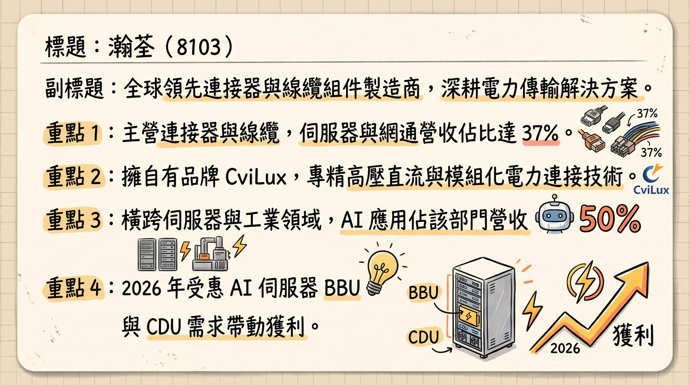
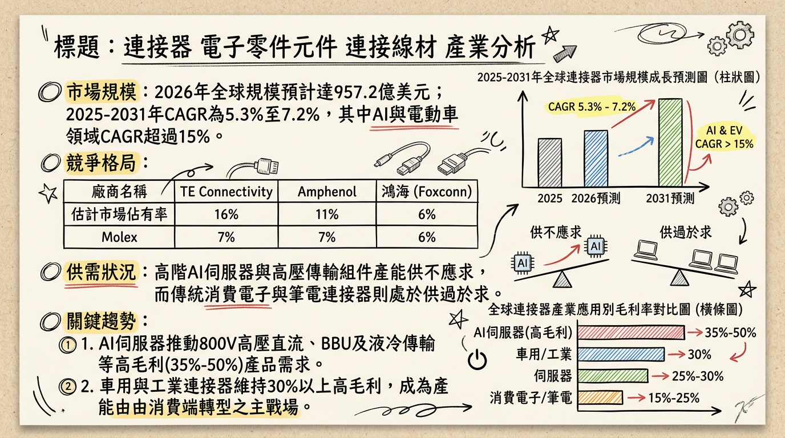
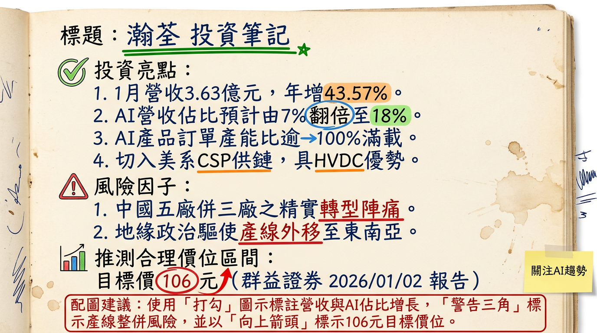

8103 瀚荃 深度研究報告：轉型 AI 電力傳輸專家，2026 迎來獲利爆發期
## 一句話摘要
瀚荃（8103）成功從傳統 NB 連接器廠轉型為 AI 伺服器高壓直流（HVDC）電力傳輸方案商，隨 ASIC 客戶訂單放量與泰越產能開出，2026 年 EPS 有望挑戰歷史新高，具備翻倍成長潛力。
## 公司概覽
瀚荃（CviLux）為全球領先的連接器與線纜組件製造商，擁有自有品牌「CviLux」。近年積極優化產品結構，從消費電子轉向高毛利的伺服器、網通與工業應用。
2025 年營收結構分析表
| 業務別 | 營收佔比 | 關鍵發展動態 |
|---|
| 伺服器與網通 | 36% - 37% | AI 相關應用佔該部門 50%，2026 年預計進一步提升 |
| 筆記型電腦 (NB) | 23% - 24% | 比重持續調降，重點轉向高單價 AI PC 連接器 |
| 工業電子 | 20% | 受惠自動化與基礎建設復甦，毛利率穩定 |
| 光電與消費電子 | 13% - 17% | 包含三星電視核心供應鏈訂單 |
| 汽車電子 | 4% | 佈局高壓大電流線材，長期成長潛力大 |
## 核心競爭優勢
高壓直流（HVDC）技術： AI 伺服器電力密度飆升，瀚荃具備 800V 高壓直流電源連接器技術，切入 PSU、BBU、CDU 內部電力板端連接。
ASIC 供應鏈地位： 成功由 NVIDIA GPU 架構延伸至 AWS、Google 等美系 CSP 之 ASIC 伺服器電力櫃供應鏈。
全球產能佈局： 採「中國精實、東南亞擴張」策略，規避地緣政治風險，滿足美系客戶去中化需求。
## 財務分析
月營收趨勢表（2025 H2 - 2026 Q1）
| 月份 | 營收金額 (億元) | 月增率 MoM | 年增率 YoY |
|---|
| 2026/01 | 3.63 | +9.3% | +43.57% |
| 2025/12 | 3.32 | +12.57% | +6.73% |
| 2025/11 | 2.95 | +11.49% | +1.09% |
| 2025/10 | 2.65 | -15.73% | +17.04% |
| 2025/09 | 3.14 | +18.12% | +11.31% |
| 2025/08 | 2.66 | -9.70% | -11.16% |
- 2025 Q3 實際表現： 季營收 8.74 億元，毛利率 38.35%，EPS 1.35 元（年增 103%）。
- 2024 年度： 營收 31.88 億元，EPS 3.96 元。
- 2025 年度（預估）： 營收 33.55 億元（YoY +5.25%），EPS 約 3.89 元。
- 2026 年度（預估）： 法人共識營收將重回雙位數增長，EPS 挑戰 6.48 - 6.87 元。
## 法說會重點（2025/12/12）
訂單能見度： AI 伺服器相關產線目前稼動率超過 100%（滿載），訂單能見度已看到 2026 年上半年。
產線精實計畫： 中國廠區 5 座整併為 3 座，優化成本結構；泰國、越南將成為主要成長基地。
技術轉向： 伺服器電力架構由 AC 轉向 HVDC，帶動板端連接器用量較傳統伺服器增加 50% 以上。
## 券商觀點
研究報告目標價整理表
| 券商名 | 目標價 | 評等 | 日期 | 2026 EPS 預估 |
|---|
| 群益證券 | 106 元 | 看多 | 2026/01/02 | 6.48 元 |
| 某國內研究部 | 117 元 | 強力買進 | 2025/12/15 | 6.87 元 |
| 元富證券 | 80 元 | 看多 | 2025/10/18 | 3.65 元 (2025 估) |
## 財報深度分析
利潤率趨勢與營運效率
| 項目 | 2025 Q3 | 2024 Q3 | 變動 (YoY) |
|---|
| 毛利率 (%) | 38.35% | 36.84% | +1.51 ppt |
| 營業利益率 (%) | 15.98% | 15.97% | +0.01 ppt |
| 存貨週轉天數 | 68.5 天 | 73.6 天 | -5.1 天 (改善) |
| 應收帳款天數 | 97.47 天 | 95.2 天 | +2.27 天 |
- 資本支出： 2026 年資本支出預計較去年增加 50%，重點投入泰國、越南二期產線及自動化設備。
## 股權異動與資本結構
現金減資： 2025 年 10 月執行現金減資 15%，每股退還 1.5 元，有效優化股本、提升 ROE。
股利政策： 2025 年配發現金股利 2.8 元，配發率維持高水準，法人預期 2026 年將隨獲利提升增加配息。
財務健康度： 負債比率維持在 40% 以下，財務結構穩健。
## 產業分析
全球連接器市場競爭格局 (2025 數據)
| 公司 | 市佔率 | 強項領域 | 2025 預估毛利率 |
|---|
| TE Connectivity | 15.5% | 汽車、航太、工業 | 32% - 35% |
| Amphenol | 11.2% | 通訊、軍工、高頻線材 | 31% - 33% |
| 瀚荃 (8103) | - | PSU/BBU 板端連接器 | 37% - 39% |
| 嘉澤 (3533) | - | CPU Socket | 50% - 52% |
- 產業趨勢： 全球連接器市場 2026 預計達 957.2 億美元。其中 AI 高壓直流傳輸領域之複合年增長率（CAGR）高達 15%，遠高於產業平均的 5.3%。
## 近期催化劑
* 2026/01 營收創 45 個月新高（3.63 億）。
* 獲美系兩大 ASIC 廠訂單（AWS/Google），2026 Q1 開始放量。
* 泰國廠新產能預計於 2026 Q2 正式上線。
* 台幣升值對外銷營收產生匯損壓力。
* 傳統 NB 市場復甦緩慢影響低階產品產能利用率。
## ⭐ 成長動能時間軸
- 2025/11： 越南廠正式量產，供應台系電源大廠海外需求。
- 2026/01： 公告 1 月營收年增 43.57%，確立 AI 轉型進入收割期。
- 2026 Q1： ASIC 伺服器電源連接器訂單開始大量出貨。
- 2026 Q2： 泰國租賃廠房產能到位，擴大供應北美伺服器客戶。
- 2026 H2： AI 營收佔比預計突破 40%，獲利結構持續優化。
- 2027 年： 東莞常平新廠投產，進一步實現產線自動化與規模效益。
## 2026 展望
- 成長動能： AI 伺服器電力架構升級（Busbar、BBU）及去中化產能配置。伺服器事業群將成為 2026 年毛利率站穩 38% 以上的核心支柱。
- 風險： 全球貿易關稅政策變數及海外擴產初期之營業費用上升。
## 投資結論
轉型紅利： 瀚荃已成功從 NB 零組件廠轉型為 AI 電力傳輸專家，產品單價（ASP）與毛利顯著提升。
獲利跳升： 預估 2026 年 EPS 有望從 3.89 元跳升至 6.5 元以上，本益比具備上修空間。
產能就位： 泰、越雙基地產能開出，可滿足美系大廠去中化需求，訂單能見度高。
建議： 參考券商目標價區間 106 - 117 元。短期關注 Q1 財報獲利是否如預期隨營收規模擴大而展現高度槓桿效應。
本報告由 AI 自動產生，資料來源為公開網路資訊，僅供參考，不構成投資建議。產生時間：2026-03-01 02:54
📊 資訊卡


